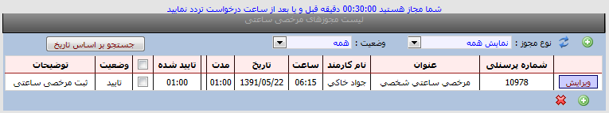
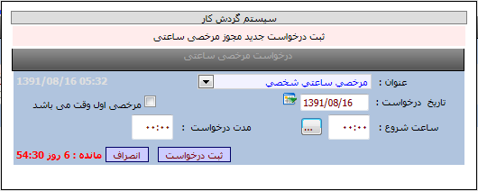

|
مرخصی
|
 
|
|
مرخصی
|
|
مرخصی ساعتی امکانات :
نمایش
لیست درخواستهای مرخصی ساعتی
ثبت ،ویرایش و حذف درخواستهای مرخصی ساعتی
نکته
: گزینه شما مجاز هستید30دقیقه قبل و بعد از
ساعت درخواست تردد نمایید به این معنی است که تلرانس تعریف شده در برنامه شما
30دقیقه است .
بطور مثال :در نمونه قابل مشاهده در تصویر ،پرسنلی که
از ساعت 6:15 به مرخصی ساعتی شخصی می رود به مدت 1ساعت از ساعت 6 لغایت
6:30 مجاز است
از شرکت خارج شده و روی دستگاه تردد وارد نماید
در غیر اینصورت هیچ مرخصی برای آن پرسنل ثبت نخواهد شد.

روش ثبت یک درخواست :
ابتدا کلید جدید را می
زنیم سپس مطابق تصویر از منوی عنوان مجوز ،مجوز مرخصی مورد نظر را انتخاب
و از منوی تاریخ ،تاریخ درخواست و ساعت شروع مرخصی را وارد نموده و در قسمت مدت
درخواست ،مدت مرخصی ساعتی را وارد نموده سپس با کلید ثبت درخواست، تایید
می نمایید. نکته: در صورتیکه مرخصی مربوط به
ابتدای شیفت یا اول وقت می باشد می بایست تیک اول وقت را بزنید. نکته :درصورتیکه مرخصی ساعتی تا
پایان وقت اداری می باشد تا پایان شیفت ساعت را محاسبه و در قسمت مدت وارد
نمایید.
روش حذف یک درخواست:
پس از ثبت یک درخواست تا
زمانیکه درخواست بوسیله مدیر تایید نشده باشد امکان حذف وجود دارد .
ابتدا گزینه لیست درخواستها
را انتخاب سپس کلید ویرایش را زده و کلید حذف را می زنید تا درخواست از لیست حذف
گردد.
کلید جستجو براساس تاریخ
:با کلید جستجو براسا تاریخ می توانید درخواستها را براساس
تاریخهاییی که وارد می نمایید مشاهده نمایید. کلید وضعیت :بوسیله این کلید
می توانید درخواستهای ارسال شده /رد شده /تایید شده و همه درخواستها را انتخاب
نمایید.
اگر
متقاضی یک ساعت خاص را انتخاب نمود ساعت فوق بعنوان ساعت شروع مرخصی پیش فرض و
فاصله آن تا تردد بعدی (درصورتیکه تردد بعدی وجود نداشته باشد صفر ) بعنوان مدت
درخواست مجوز درنظر گرفته شود.
مدت درخواست مجوز قابل اصلاح میباشد و نباید
بیشتر از شیفت باشد.
